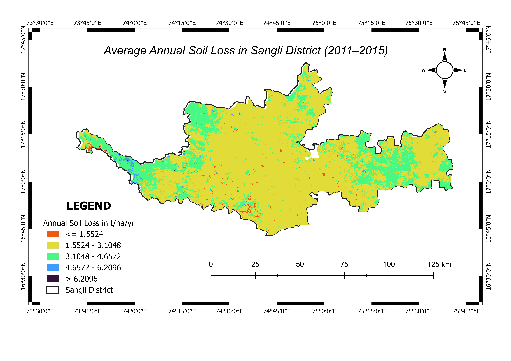
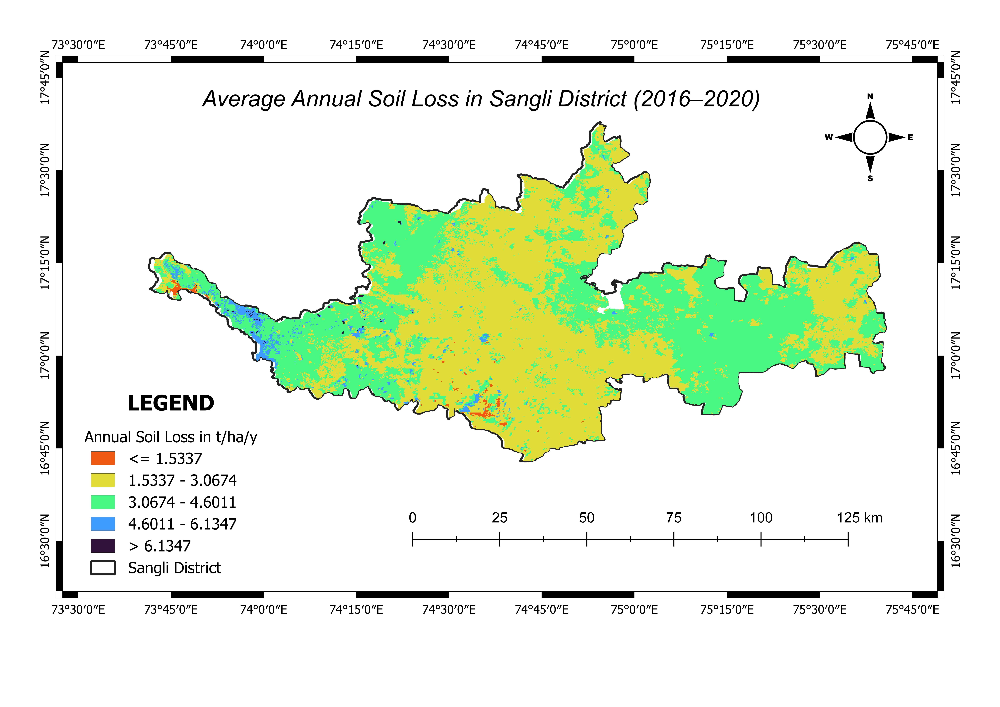

(RUSLE)
Assessment of soil erosion using the Revised Universal Soil Loss Equation (RUSLE) integrated with GIS and Remote Sensing to identify erosion-prone areas and support sustainable land management.
Introduction
This project estimated annual soil loss using the Revised Universal Soil Loss Equation (RUSLE) integrated with GIS techniques. Spatial datasets including rainfall, soil properties, topography, land use and conservation practices were combined to evaluate soil erosion. The final soil loss maps were prepared for two time periods (2011–2015 and 2016–2020) to assess temporal changes in erosion intensity and support watershed management.
Study Area
Study Area : Sangli District, Maharashtra, India
Objectives
- Estimate soil loss using the RUSLE model.
- Compare soil erosion for two different time periods.
- Identify erosion-prone areas.
- Support soil and water conservation planning.
Software & Dataset Used
RUSLE Model
The RUSLE model estimates annual soil loss using the following equation:
A = R × K × LS × C × P
- R – Rainfall Erosivity Factor
- K – Soil Erodibility Factor
- LS – Slope Length & Steepness Factor
- C – Cover Management Factor
- P – Conservation Practice Factor
Methodology Flowchart
Maps Gallery

Study Area Map

Soil Loss Map (2011–2015)

Soil Loss Map (2016–2020)
Results
- Generated soil loss maps for the periods 2011–2015 and 2016–2020.
- Compared spatial variations in soil erosion between the two periods.
- Identified areas with low, moderate and high soil loss.
- Supported sustainable watershed and land resource management.